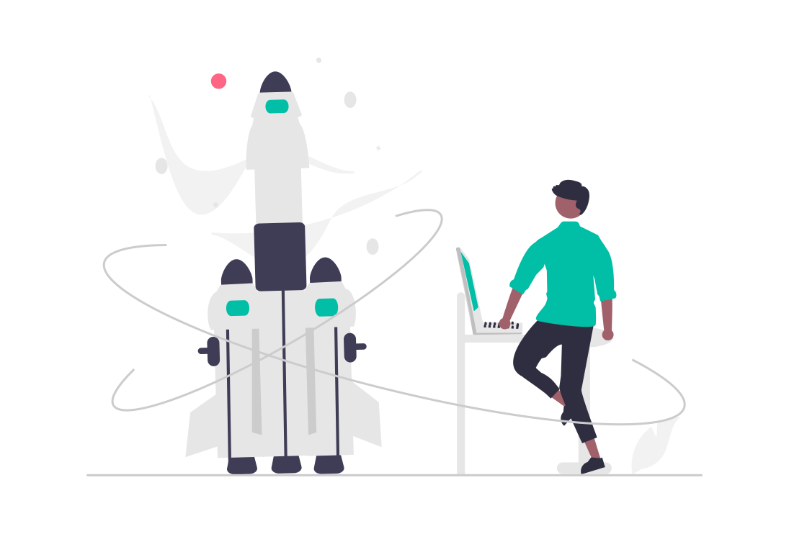

SmartGov
MeetUp - Hackathon
- Incubation
Rendre l'administration intelligente pour
ameliorer
le service public grâce à la participation et la collaboration des
acteurs pour régler les problématiques nationales par le numérique
A propos de SmartGov
Depuis 2012 le gouvernement gabonais à mis en place le programme
eGov. Ce programme qui est porté par l'Etat consiste à
informatiser l'administration, mettre en place l'infrastructure
numérique de base, former les utilisateurs aux nouveaux outils de
l'information et de la communication.
Cette digialisation du pays a profité aux entreprises privées qui
ont pu développer de nouvelles solutions permettant de facilité le
quotidien des populations et améliorer considérablement la vie des
gabonais. Cependant les services de l'administration public ont
très peu
évolués. Très peu de solutions innovantes sont développées
régulièrement pour améliorer la performance de nos
administrations, la qualité des services aux usagers et la
sécurité
des informations.
Pour cela le programme SmartGov vient compléter le programme eGov
pour permettre la création de plus en plus de startup d'état,
c'est à dire, des startups développés par les fonctionnaires qui
comprennent mieux les problématiques de l'administration public
mais qui n'ont peux être pas les outils pour élaborer les
solutions innovantes qu'ils peuvent imaginer.
Pour cela le programme SmartGov mets en place trois éléments:
MeetUp
Hackathon
Incubation
Les éléments du programme SmartGov
SmartGov
MeetUp
Il s'agit de réunions organisées en présentiel ou en distanciel
(ateliers, rencontres, formations, panels). Notamment des
formations des fonctionnaires sur des outils numériques ; des
présentations de produits, solutions des acteurs privés pour
améliorer le service public etc.
Hackathon
SmartGov
Son objectif est de pouvoir identifier et structurer (idéation -
structuration - prototypage) des projets innovants qui visent à
rendre l'administration intelligente et améliorer les services
aux usagers. Le Hackathon s'étale sur 2 à 3 jours
Programme
d'incubation
Startup d'état
Son objectif est de
faire maturer les différents projets qui seront primés suite au
Hackathon. (Adoption - déploiement - financement) ; Le programme
s'exécute sur une période de 6 mois à 1 an. Pour cette première
édition, le programme d'incubation durera 3 mois suivi d'un
Demoday.
Les étapes du programme SmartGov
1
Appel à projet
L'appel à projet durera 2 mois à partir du 28 février 2022.
Pendant cette période vous pourrez vous inscrire en remplissant
le formulaire de soumission de projet disponible sur le site
officiel du programme SmartGov
Postuler maintenant
Pendant les deux mois de l'appel à projet il y'aura des sessions
d'informations en ligne et en présentiel. Ainsi que des journées
de formation au modèle économique dans les différentes
administrations
- 15 avril et 15 mars - Session d'information en presentiel à la SING
- Avril et Mars - Programmation de 2 sessions par mois de Live sur Facebook
2
3
Sélection pour
le hackathon
A la fin de l'appel à projet le 28 Avril 2022, 10 projets seront
sélectionnées parmi toutes les candidatures pour défendre leur
projet devant un jury pour faire partie des 5 startups qui
participerons au hackathon
- 28 Avril 2022 - Fin de l'appel à projet
- 29 Avril au 30 Mai - Comité de notation
- 04 Mai 2022 - Annonce de présélection des 10 projets
- 06 au 09 Mai 2022 - Audition des présélectionnés
- 11 Mai 2022 - Annonce de sélection
Le hackathon se déroulera sur 3 journées à partir du 18 Mai 2022
- Journée 1: Panel de 1h à 2h avec des experts techniques sur les différentes thématiques des projets (matinée) ; Formation des participants au business model, Marketing etc.(en après-midi jusqu'à 14h30) Début des travaux des équipes (15h - 19h)
- Journée 2: Travaux des équipes (sessions techniques - prototypages) Pitch et sélections des 3 finalistes (dès 16h)
- Journée 3: Quartier libre pour les participant et finalisation des présentations ; Annonce des 3 finalistes; Pitch Final et annonce du lauréat (dès 16h)
4
5
Pitch Final
A l'issu du pitch final de la journée 3 du hackathon, un seul
projet sera primé. Ce dernier recevra un financement d'une
valeur de 1,000,000 FCFA pour le développement de son projet
ainsi
que un accompagnement de la Société d'Incubation Numérique du
Gabon (SING SA) dans le cadre du programme Startup d'Etat
La session d'intégration du Lauréat au hackathon se fera le 31
Mai 2022; Et se terminera le 30
aout 2022 par un demoday au cours duquel la startup fera une
présentation du niveau de maturation de son projet suite à
l'accompagnement et pourra convaincre ainsi un ensemble
d'investisseur potentiel pour aller plus loin dans son projet
Incubation
6
